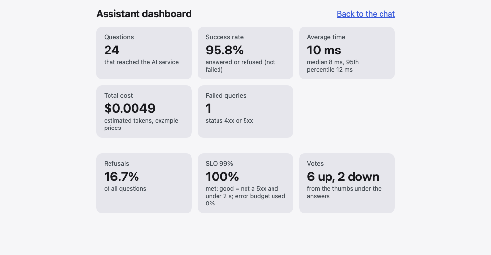

Project Lab 20: the dashboard
1 · Warm-up 5 min
Answer from memory, then open the answers.
- What is the error budget of a 99% objective?
- Why is the role part of a cache key?
Answers
- 1%: the share of requests that may be bad before the promise is broken.
- So that an answer made for staff is never served to a customer.
2 · The goal 5 min
This is the Module 12 checkpoint: the dashboard that your plan called for. By the end:
GET /api/statsin the Python service (staff only) with the five numbers: question count, success rate, average time, total cost and failed queries, plus the SLI against its SLO and the votes.- The .NET gateway forwards
/api/statsand/api/feedback. - A React dashboard page, and a Good / Bad vote under every answer in the chat.
- A real screenshot in the README, with an honest note on what it is made of.
3 · Plan the work 10 min
Cut the work in small pieces, and commit after each one:
- The statistics in Python (
stats.pyand the endpoint), staff only. - The vote endpoint and store (Wednesday).
- The gateway: forward both, map the errors, test.
- The page: the API functions, the votes, the dashboard.
- Run it: fill the table with about 20 requests, vote, open the page.
- The screenshot and the README.
4 · Build 90 min
Step 1: the statistics (Python)
stats.py from Wednesday, and the endpoint GET /api/stats that only staff may call (a 403 otherwise). A fresh database has no table yet, so the statistics create it and show zeros: this was a real bug that a test found:
import psycopg
from my_ai_project.metrics import SCHEMA
# An SLI is a measurement of what the user feels; an SLO is the target for it. Here: a request is GOOD when it did not fail on our side
# (status below 500) and was fast enough. A 4xx is the caller's mistake: it does not count against us.
SLI_LATENCY_MS = 2000
SLO_TARGET_PERCENT = 99.0
def compute_stats(dsn: str) -> dict[str, object]:
"""The five numbers of the dashboard, the SLI against its SLO, and the votes. Everything comes from the requests and feedback tables."""
with psycopg.connect(dsn) as conn:
conn.execute(SCHEMA) # a fresh database has no requests table yet: the dashboard must show zeros, not crash
conn.execute("CREATE TABLE IF NOT EXISTS feedback (id bigserial PRIMARY KEY, time timestamptz NOT NULL DEFAULT now(), request_id text NOT NULL, rating text NOT NULL, comment text)")
row = conn.execute(
"""
SELECT count(*),
count(*) FILTER (WHERE outcome IN ('answered', 'refused')),
coalesce(avg(latency_ms), 0),
coalesce(percentile_cont(0.5) WITHIN GROUP (ORDER BY latency_ms), 0),
coalesce(percentile_cont(0.95) WITHIN GROUP (ORDER BY latency_ms), 0),
coalesce(sum(cost_usd), 0),
count(*) FILTER (WHERE outcome = 'error'),
count(*) FILTER (WHERE outcome = 'refused'),
count(*) FILTER (WHERE status_code < 500 AND latency_ms <= %s)
FROM requests WHERE route = '/api/ask'
""",
(SLI_LATENCY_MS,),
).fetchone()
votes: dict[str, int] = {str(rating): int(count) for rating, count in conn.execute("SELECT rating, count(*) FROM feedback GROUP BY rating").fetchall()}
questions, succeeded, average, median, p95, cost, failed, refused, good = row or (0, 0, 0, 0, 0, 0, 0, 0, 0)
sli = 100.0 * good / questions if questions else 100.0
budget = 100.0 - SLO_TARGET_PERCENT
return {
"questions": questions,
"success_percent": round(100.0 * succeeded / questions, 1) if questions else 100.0,
"avg_ms": round(float(average)),
"median_ms": round(float(median)),
"p95_ms": round(float(p95)),
"total_cost_usd": round(float(cost), 6),
"failed": failed,
"refusal_percent": round(100.0 * refused / questions, 1) if questions else 0.0,
"sli_percent": round(sli, 1),
"slo_percent": SLO_TARGET_PERCENT,
"slo_met": sli >= SLO_TARGET_PERCENT,
"error_budget_used_percent": round(min(100.0, 100.0 * (100.0 - sli) / budget), 1) if budget else 0.0,
"feedback_up": int(votes.get("up", 0)),
"feedback_down": int(votes.get("down", 0)),
}Step 2: the gateway
Two new endpoints. GET /api/stats passes the JSON through; POST /api/feedback answers 201. The gateway checks the vote before Python sees it, and maps a Python 403 and 404 to the same statuses:
diff --git a/AskGateway/Models.cs b/AskGateway/Models.cs
index 7f51fd6..be2c6f8 100644
--- a/AskGateway/Models.cs
+++ b/AskGateway/Models.cs
@@ -18,3 +18,10 @@ public record AssistRequest([property: Required, StringLength(500, MinimumLength
public record ToolCallInfo(string Name, Dictionary<string, JsonElement> ToolInput, bool IsError);
public record AssistResponse(string Answer, List<ToolCallInfo> ToolCalls, int Rounds, bool GaveUp);
+
+public record FeedbackRequest(
+ [property: Required, RegularExpression(@"\A[A-Za-z0-9._-]{1,64}\z")] string RequestId,
+ [property: Required, RegularExpression(@"\A(up|down)\z")] string Rating,
+ [property: StringLength(500)] string? Comment = null);
+
+public record StatusReply(string Status);
diff --git a/AskGateway/Program.cs b/AskGateway/Program.cs
index 2c28ed9..1a357af 100644
--- a/AskGateway/Program.cs
+++ b/AskGateway/Program.cs
@@ -44,13 +44,19 @@ app.MapPost("/api/ask", (AskRequest request, HttpContext http, PythonServiceClie
app.MapPost("/api/assist", (AssistRequest request, HttpContext http, PythonServiceClient python, CancellationToken cancellationToken) =>
Forward(() => python.AssistAsync(request, http.Request.Headers[PythonServiceClient.RoleHeader].FirstOrDefault(), cancellationToken)));
+app.MapPost("/api/feedback", (FeedbackRequest request, HttpContext http, PythonServiceClient python, CancellationToken cancellationToken) =>
+ Forward(() => python.FeedbackAsync(request, http.Request.Headers[PythonServiceClient.RoleHeader].FirstOrDefault(), cancellationToken), StatusCodes.Status201Created));
+
+app.MapGet("/api/stats", (HttpContext http, PythonServiceClient python, CancellationToken cancellationToken) =>
+ Forward(() => python.StatsAsync(http.Request.Headers[PythonServiceClient.RoleHeader].FirstOrDefault(), cancellationToken)));
+
app.Run();
-static async Task<IResult> Forward<T>(Func<Task<T>> call)
+static async Task<IResult> Forward<T>(Func<Task<T>> call, int successStatus = StatusCodes.Status200OK)
{
try
{
- return Results.Ok(await call());
+ return Results.Json(await call(), ApiJson.Options, statusCode: successStatus);
}
catch (PythonServiceException error)
{
diff --git a/AskGateway/PythonServiceClient.cs b/AskGateway/PythonServiceClient.cs
index 9005305..5e793a5 100644
--- a/AskGateway/PythonServiceClient.cs
+++ b/AskGateway/PythonServiceClient.cs
@@ -1,4 +1,5 @@
using System.Net;
+using System.Text.Json;
namespace AskGateway;
@@ -17,9 +18,19 @@ public class PythonServiceClient(HttpClient http, IHttpContextAccessor accessor,
public Task<AssistResponse> AssistAsync(AssistRequest request, string? role, CancellationToken cancellationToken) =>
PostAsync<AssistRequest, AssistResponse>("/api/assist", request, role, cancellationToken);
- async Task<TResponse> PostAsync<TRequest, TResponse>(string path, TRequest request, string? role, CancellationToken cancellationToken)
+ public Task<StatusReply> FeedbackAsync(FeedbackRequest request, string? role, CancellationToken cancellationToken) =>
+ PostAsync<FeedbackRequest, StatusReply>("/api/feedback", request, role, cancellationToken);
+
+ public Task<JsonElement> StatsAsync(string? role, CancellationToken cancellationToken) =>
+ SendAsync<JsonElement>(new HttpRequestMessage(HttpMethod.Get, "/api/stats"), role, cancellationToken);
+
+ Task<TResponse> PostAsync<TRequest, TResponse>(string path, TRequest request, string? role, CancellationToken cancellationToken) =>
+ SendAsync<TResponse>(new HttpRequestMessage(HttpMethod.Post, path) { Content = JsonContent.Create(request, options: ApiJson.Options) }, role, cancellationToken);
+
+ async Task<TResponse> SendAsync<TResponse>(HttpRequestMessage message, string? role, CancellationToken cancellationToken)
{
- using var message = new HttpRequestMessage(HttpMethod.Post, path) { Content = JsonContent.Create(request, options: ApiJson.Options) };
+ using var _ = message;
+ var path = message.RequestUri?.OriginalString ?? "";
if (!string.IsNullOrEmpty(role))
{
message.Headers.Add(RoleHeader, role);
@@ -53,6 +64,14 @@ public class PythonServiceClient(HttpClient http, IHttpContextAccessor accessor,
{
throw new PythonServiceException(StatusCodes.Status503ServiceUnavailable, "the AI service cannot reach its database");
}
+ if (response.StatusCode == HttpStatusCode.Forbidden)
+ {
+ throw new PythonServiceException(StatusCodes.Status403Forbidden, "this role may not do that");
+ }
+ if (response.StatusCode == HttpStatusCode.NotFound)
+ {
+ throw new PythonServiceException(StatusCodes.Status404NotFound, "the AI service does not know that request id");
+ }
if (response.StatusCode == HttpStatusCode.UnprocessableEntity)
{
throw new PythonServiceException(StatusCodes.Status400BadRequest, "the AI service rejected the request (check the role)");Six new tests (a vote is forwarded, three bad votes are 400 and never reach Python, an unknown id is a 404, the statistics pass through and a 403 stays a 403):
diff --git a/AskGateway.Tests/GatewayTests.cs b/AskGateway.Tests/GatewayTests.cs
index 61dde62..10cf183 100644
--- a/AskGateway.Tests/GatewayTests.cs
+++ b/AskGateway.Tests/GatewayTests.cs
@@ -162,4 +162,52 @@ public class GatewayTests
Assert.NotEqual(unsafeId, returned);
Assert.Equal(returned, python.LastRequest!.Headers.GetValues("X-Request-Id").Single());
}
+
+ [Fact]
+ public async Task A_vote_is_forwarded_to_python_and_answers_201()
+ {
+ var python = new StubHandler(_ => Json(HttpStatusCode.Created, """{"status":"stored"}"""));
+ var response = await ClientWith(python).PostAsJsonAsync("/api/feedback", new { request_id = "demo-123", rating = "down", comment = "wrong page" });
+
+ Assert.Equal(HttpStatusCode.Created, response.StatusCode);
+ Assert.Equal("/api/feedback", python.LastRequest!.RequestUri!.AbsolutePath);
+ Assert.Contains("\"request_id\":\"demo-123\"", python.LastBody);
+ Assert.Contains("\"stored\"", await response.Content.ReadAsStringAsync());
+ }
+
+ [Theory]
+ [InlineData("demo-123", "great")]
+ [InlineData("bad id;", "up")]
+ [InlineData("", "up")]
+ public async Task A_bad_vote_is_a_400_and_never_reaches_python(string requestId, string rating)
+ {
+ var python = new StubHandler(_ => Json(HttpStatusCode.Created, """{"status":"stored"}"""));
+ var response = await ClientWith(python).PostAsJsonAsync("/api/feedback", new { request_id = requestId, rating });
+
+ Assert.Equal(HttpStatusCode.BadRequest, response.StatusCode);
+ Assert.Null(python.LastRequest);
+ }
+
+ [Fact]
+ public async Task An_unknown_request_id_in_a_vote_is_a_404()
+ {
+ var python = new StubHandler(_ => Json(HttpStatusCode.NotFound, """{"detail":"no request has that id"}"""));
+ var response = await ClientWith(python).PostAsJsonAsync("/api/feedback", new { request_id = "nope", rating = "up" });
+ Assert.Equal(HttpStatusCode.NotFound, response.StatusCode);
+ }
+
+ [Fact]
+ public async Task The_statistics_are_passed_through_and_a_403_stays_a_403()
+ {
+ var python = new StubHandler(request => request.Headers.Contains("x-demo-role")
+ ? Json(HttpStatusCode.OK, """{"questions":20,"success_percent":95.0}""")
+ : Json(HttpStatusCode.Forbidden, """{"detail":"only staff"}"""));
+ var http = ClientWith(python);
+
+ Assert.Equal(HttpStatusCode.Forbidden, (await http.GetAsync("/api/stats")).StatusCode);
+ http.DefaultRequestHeaders.Add("x-demo-role", "staff");
+ var ok = await http.GetAsync("/api/stats");
+ Assert.Equal(HttpStatusCode.OK, ok.StatusCode);
+ Assert.Contains("\"questions\":20", await ok.Content.ReadAsStringAsync());
+ }
}Step 3: the page
The API functions (the vote and the statistics), a Good and a Bad button under each answer, a #/dashboard route, and some CSS:
diff --git a/src/App.tsx b/src/App.tsx
index 115ff3a..8608877 100644
--- a/src/App.tsx
+++ b/src/App.tsx
@@ -1,5 +1,5 @@
import { useState, type FormEvent } from 'react'
-import { ApiError, assist, type Role, type ToolCall } from './api'
+import { ApiError, assist, sendFeedback, type Rating, type Role, type ToolCall } from './api'
import './index.css'
interface Message {
@@ -8,6 +8,8 @@ interface Message {
text: string
toolCalls?: ToolCall[]
failed?: boolean
+ requestId?: string | null
+ vote?: Rating
}
export default function App() {
@@ -20,6 +22,15 @@ export default function App() {
setMessages((current) => [...current, { ...message, id: current.length }])
}
+ async function vote(id: number, requestId: string, rating: Rating) {
+ setMessages((current) => current.map((message) => (message.id === id ? { ...message, vote: rating } : message)))
+ try {
+ await sendFeedback(requestId, rating)
+ } catch {
+ setMessages((current) => current.map((message) => (message.id === id ? { ...message, vote: undefined } : message)))
+ }
+ }
+
async function send(event: FormEvent) {
event.preventDefault()
const text = question.trim()
@@ -29,7 +40,7 @@ export default function App() {
setWaiting(true)
try {
const result = await assist(text, role)
- add({ from: 'assistant', text: result.answer, toolCalls: result.tool_calls })
+ add({ from: 'assistant', text: result.answer, toolCalls: result.tool_calls, requestId: result.requestId })
} catch (error) {
const message = error instanceof ApiError ? error.message : 'Something went wrong.'
add({ from: 'assistant', text: message, failed: true })
@@ -42,6 +53,7 @@ export default function App() {
<main>
<header>
<h1>PumpGuard assistant</h1>
+ <a href="#/dashboard">Dashboard</a>
<label>
I am a{' '}
<select value={role} onChange={(event) => setRole(event.target.value as Role)}>
@@ -71,6 +83,22 @@ export default function App() {
</ul>
</details>
)}
+ {message.from === 'assistant' && message.requestId && !message.failed && (
+ <div className="vote" aria-label="Rate this answer">
+ {message.vote ? (
+ <span>Thanks for your vote.</span>
+ ) : (
+ <>
+ <button type="button" aria-label="Good answer" onClick={() => vote(message.id, message.requestId as string, 'up')}>
+ Good
+ </button>
+ <button type="button" aria-label="Bad answer" onClick={() => vote(message.id, message.requestId as string, 'down')}>
+ Bad
+ </button>
+ </>
+ )}
+ </div>
+ )}
</article>
))}
{waiting && <p className="hint">Thinking...</p>}
diff --git a/src/api.ts b/src/api.ts
index da6fa42..296ece9 100644
--- a/src/api.ts
+++ b/src/api.ts
@@ -11,6 +11,7 @@ export interface AssistResponse {
tool_calls: ToolCall[]
rounds: number
gave_up: boolean
+ requestId: string | null // the X-Request-Id of this answer: a vote and a bug report can quote it
}
export class ApiError extends Error {
@@ -38,5 +39,46 @@ export async function assist(question: string, role: Role): Promise<AssistRespon
const problem = (await response.json().catch(() => null)) as { detail?: string; title?: string } | null
throw new ApiError(response.status, problem?.detail ?? problem?.title ?? `The request failed (${response.status}).`)
}
- return (await response.json()) as AssistResponse
+ const body = (await response.json()) as Omit<AssistResponse, 'requestId'>
+ return { ...body, requestId: response.headers.get('x-request-id') }
+}
+
+export type Rating = 'up' | 'down'
+
+export async function sendFeedback(requestId: string, rating: Rating): Promise<void> {
+ const response = await fetch('/api/feedback', {
+ method: 'POST',
+ headers: { 'content-type': 'application/json' },
+ body: JSON.stringify({ request_id: requestId, rating }),
+ })
+ if (!response.ok) throw new ApiError(response.status, 'Your vote could not be saved.')
+}
+
+export interface Stats {
+ questions: number
+ success_percent: number
+ avg_ms: number
+ median_ms: number
+ p95_ms: number
+ total_cost_usd: number
+ failed: number
+ refusal_percent: number
+ sli_percent: number
+ slo_percent: number
+ slo_met: boolean
+ error_budget_used_percent: number
+ feedback_up: number
+ feedback_down: number
+}
+
+// DEMO ONLY: the dashboard asks as staff through the demo header. A real app sends a login token (Module 8).
+export async function getStats(): Promise<Stats> {
+ let response: Response
+ try {
+ response = await fetch('/api/stats', { headers: { 'x-demo-role': 'staff' } })
+ } catch {
+ throw new ApiError(0, 'Cannot reach the server. Is the gateway running?')
+ }
+ if (!response.ok) throw new ApiError(response.status, `The statistics could not be loaded (${response.status}).`)
+ return (await response.json()) as Stats
}
diff --git a/src/index.css b/src/index.css
index bb843b2..3942760 100644
--- a/src/index.css
+++ b/src/index.css
@@ -17,3 +17,14 @@ form { display: flex; gap: 0.5rem; }
input { flex: 1; padding: 0.6rem; font-size: 1rem; border: 1px solid #adb5bd; border-radius: 0.5rem; }
button { padding: 0.6rem 1rem; font-size: 1rem; border: 0; border-radius: 0.5rem; background: #3b5bdb; color: #fff; cursor: pointer; }
button:disabled { opacity: 0.5; cursor: not-allowed; }
+
+.vote { margin-top: 0.4rem; font-size: 0.85rem; display: flex; gap: 0.4rem; align-items: center; }
+.vote button { padding: 0.15rem 0.6rem; font-size: 0.85rem; background: transparent; color: inherit; border: 1px solid #adb5bd; }
+.cards { flex: none; padding: 0; display: grid; grid-template-columns: repeat(auto-fit, minmax(10rem, 1fr)); gap: 0.75rem; margin: 1rem 0; }
+.card { background: #e6e6ec; border-radius: 0.75rem; padding: 0.8rem 1rem; }
+.card .label { font-size: 0.8rem; color: #495057; }
+.card .value { font-size: 1.6rem; font-weight: 600; margin: 0.2rem 0; }
+.card .note { font-size: 0.75rem; color: #495057; }
+.failed-text { color: #e03131; }
+a { color: #3b5bdb; }
+@media (prefers-color-scheme: dark) { .card { background: #26262d; } .card .label, .card .note { color: #adb5bd; } a { color: #8ea2f5; } }
diff --git a/src/main.tsx b/src/main.tsx
index bef5202..9fa06e0 100644
--- a/src/main.tsx
+++ b/src/main.tsx
@@ -1,10 +1,21 @@
-import { StrictMode } from 'react'
+import { StrictMode, useEffect, useState } from 'react'
import { createRoot } from 'react-dom/client'
import './index.css'
import App from './App.tsx'
+import Dashboard from './Dashboard.tsx'
+
+function Router() {
+ const [hash, setHash] = useState(window.location.hash)
+ useEffect(() => {
+ const onChange = () => setHash(window.location.hash)
+ window.addEventListener('hashchange', onChange)
+ return () => window.removeEventListener('hashchange', onChange)
+ }, [])
+ return hash === '#/dashboard' ? <Dashboard /> : <App />
+}
createRoot(document.getElementById('root')!).render(
<StrictMode>
- <App />
+ <Router />
</StrictMode>,
)The dashboard component:
import { useEffect, useState } from 'react'
import { ApiError, getStats, type Stats } from './api'
import './index.css'
function Card({ label, value, note }: { label: string; value: string; note?: string }) {
return (
<div className="card">
<div className="label">{label}</div>
<div className="value">{value}</div>
{note && <div className="note">{note}</div>}
</div>
)
}
export default function Dashboard() {
const [stats, setStats] = useState<Stats | null>(null)
const [error, setError] = useState<string | null>(null)
useEffect(() => {
getStats()
.then(setStats)
.catch((err) => setError(err instanceof ApiError ? err.message : 'Something went wrong.'))
}, [])
return (
<main>
<header>
<h1>Assistant dashboard</h1>
<a href="#/">Back to the chat</a>
</header>
{error && <p className="failed-text">{error}</p>}
{!stats && !error && <p className="hint">Loading...</p>}
{stats && (
<>
<section className="cards" aria-label="The five numbers">
<Card label="Questions" value={String(stats.questions)} note="that reached the AI service" />
<Card label="Success rate" value={`${stats.success_percent}%`} note="answered or refused (not failed)" />
<Card label="Average time" value={`${stats.avg_ms} ms`} note={`median ${stats.median_ms} ms, 95th percentile ${stats.p95_ms} ms`} />
<Card label="Total cost" value={`$${stats.total_cost_usd.toFixed(4)}`} note="estimated tokens, example prices" />
<Card label="Failed queries" value={String(stats.failed)} note="status 4xx or 5xx" />
</section>
<section className="cards" aria-label="Quality and reliability">
<Card label="Refusals" value={`${stats.refusal_percent}%`} note="of all questions" />
<Card
label={`SLO ${stats.slo_percent}%`}
value={`${stats.sli_percent}%`}
note={`${stats.slo_met ? 'met' : 'NOT met'}: good = not a 5xx and under 2 s; error budget used ${stats.error_budget_used_percent}%`}
/>
<Card label="Votes" value={`${stats.feedback_up} up, ${stats.feedback_down} down`} note="from the thumbs under the answers" />
</section>
</>
)}
</main>
)
}Step 4: check
gateway dotnet test: Passed! - Failed: 0, Passed: 21, Skipped: 0, Total: 21 (15 + 6 new: a vote, three bad votes, a 404, the statistics and a 403)
python pytest: 209 passed (the whole project) mypy: no issues found in 76 source files
page npx tsc -b: no errors npx vite build: built
5 · Run it, and take the screenshot 20 min
Start the database, the Python service, the gateway and the page (four terminals). Fill the table with about 20 requests through the gateway (your golden questions as staff, a few repeated, one from a customer, one that fails), and vote on a few answers. Then the statistics as the page will see them:
{"questions":24,"success_percent":95.8,"avg_ms":10,"median_ms":8,"p95_ms":12,"total_cost_usd":0.004948,"failed":1,"refusal_percent":16.7,
"sli_percent":100.0,"slo_percent":99.0,"slo_met":true,"error_budget_used_percent":0.0,"feedback_up":6,"feedback_down":2}
Open http://localhost:5173, ask a question, and click Bad. The page says “Thanks for your vote”, and the table gets a row (your request id, down): that id is the one in the response header of that answer. An automated tool did exactly this in a real browser: the vote of a click was stored with the right id.
Then open http://localhost:5173/#/dashboard. You can take the screenshot with Chrome from the command line, so that it is a file you can commit:
"/Applications/Google Chrome.app/Contents/MacOS/Google Chrome" --headless=new --window-size=1000,520 --virtual-time-budget=8000 \
--screenshot=docs/dashboard.png "http://localhost:5173/#/dashboard"
This is the real screenshot of the run above:

Read it as a stranger would. 24 questions: only those that reached the Python service. 95.8% success: answered or refused, and the one failure is a request with an unknown role. 10 ms average, median 8: with a stand-in writer, so there is no model time in it. $0.0049: estimated tokens at example prices. The SLO card says 100% against a target of 99%, and 6 up against 2 down.
6 · Stuck? anytime
- The dashboard shows an error: the page asks as staff through the demo header; check that the gateway and the Python service run, and test
curl localhost:5100/api/stats -H "x-demo-role: staff"first. - A vote is a 404: the id must be in the
requeststable: the page reads it from thex-request-idheader, so the gateway must return that header (it does, from Day 131). - All the numbers are 0: no rows yet. Send requests through the gateway first.
- The screenshot is blank: give the page time to load the numbers (
--virtual-time-budget), and check that the page works in a browser first. - The cards have a strange gap: a CSS rule of the chat page (
section) also applies to the cards; the diff has the fix (.cards { flex: none; padding: 0 }).
7 · Finish and ship 15 min
Add the README section with the screenshot in docs/dashboard.png, run the checklist, and push all three projects.
## Dashboard

http://localhost:5173/#/dashboard (staff only: the demo role header; a login replaces it later)
GET /api/stats -> questions, success rate, average and median time, total cost, failed queries, the SLI against its SLO, the votes
Questions requests that reached the AI service (a request that the gateway rejects with a 400 has no row)
Success rate answered or refused, not failed. A refusal is a correct result.
Average time shown with the median and the 95th percentile: the average hides slow requests
Total cost ESTIMATED tokens, EXAMPLE prices (metrics.py): replace both with real ones
Failed queries status 4xx or 5xx
SLI / SLO good = not a 5xx and under 2 s; the objective is 99%
Screenshot from a rehearsal of 24 requests with a stand-in writer, not from production.[ ] GET /api/stats returns the five numbers, the SLI against the SLO and the votes; a customer gets a 403
[ ] the gateway forwards /api/feedback (201, 400, 404) and /api/stats (200, 403); its tests pass
[ ] the page has a Good/Bad vote under each answer (it sends the request id) and a dashboard at #/dashboard
[ ] I opened both in a browser, clicked a vote and saw it in the table
[ ] docs/dashboard.png is a real screenshot, and the README says what it is made of (a rehearsal, a stand-in, example prices)
[ ] every number on the page is defined, and the README says what it hides
[ ] tests pass (Python, .NET), types pass (mypy, tsc), nothing got worse; committed and pushedgit add ., git commit -m "Add the dashboard, votes and statistics", git push.
8 · Check yourself 5 min
- Why is the statistics endpoint only for staff?
- Why must the README say what the screenshot is made of?
- Which of the five numbers hides the most, and what does it hide?
Answers
- The numbers describe how the system is used and how well it works; they are not for customers. (Until there is a real login, the role is a forgeable demo header: say so.)
- A number without its source can mislead: here a rehearsal, a stand-in writer, estimated tokens and example prices. A reviewer should be able to tell.
- The average time hides slow requests (a cold start). The total cost hides that its tokens are estimates and its prices examples. The success rate counts a refusal as a success.
+ · Game: Dashboard Check 5 min
You read the dashboard. Read the card, pick what it means and what it hides, then see the real numbers.
Ready? 6 rounds. You need no setup: read, decide, then see the real result.
Tick “Play the Dashboard Check game” on My Learning when you reach the end. Any score counts, and the rounds are shuffled when you play again.
9 · Your win, and what’s next 3 min
You made: a dashboard of the five numbers with an SLI, votes under every answer, endpoints in Python and in the gateway with tests, and a real screenshot with an honest caption. That is the Module 12 checkpoint.
- Go to My Learning and tick your Day 140 checklist.
- Share one line in the comments, with your screenshot: which number moved when you changed something?
- Next: Sunday is the Module 12 retrospective, and from now on the plan asks for three to five job applications a week.